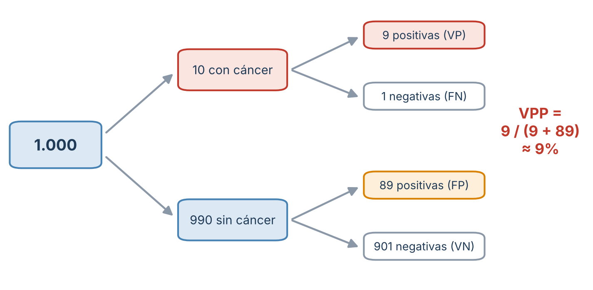
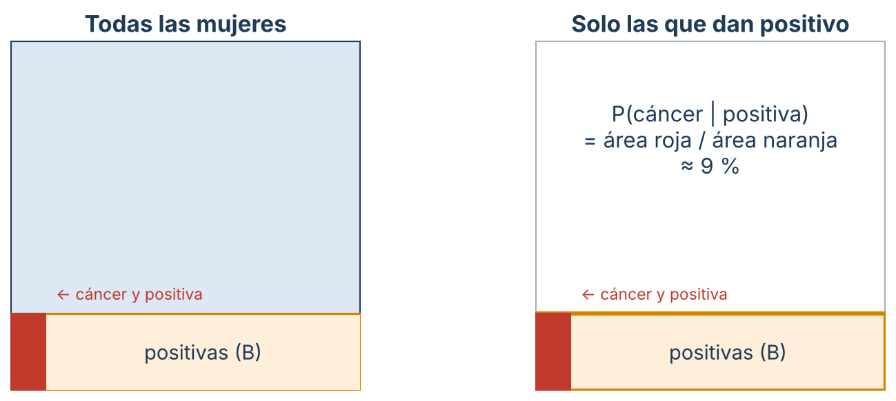
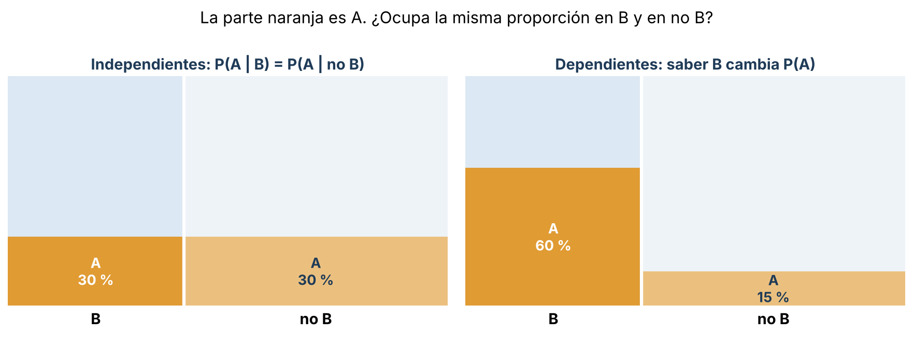
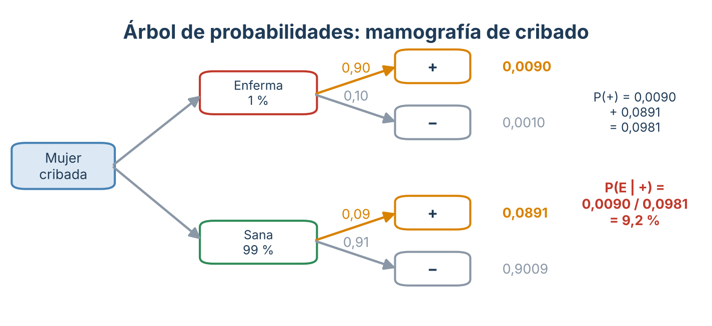
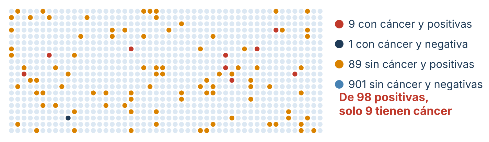
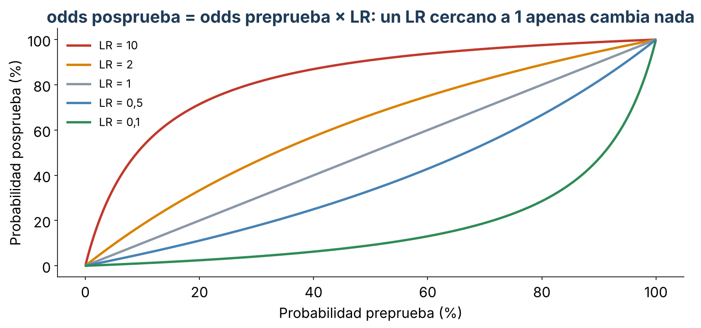
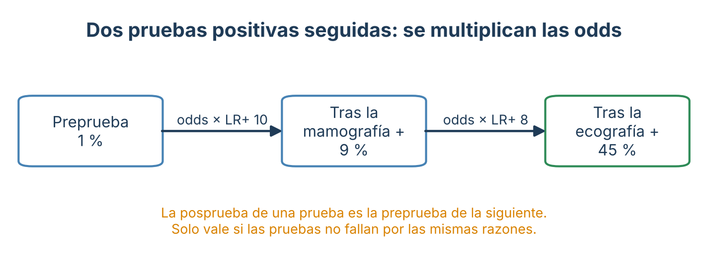

Bioestadística (1964) · Grado en Medicina · Curso 2027-2028
Tema 150Probabilidad condicionada, independencia y teorema de Bayes en el razonamiento clínico
Módulo 4. Probabilidad
Evaluación: el examen del Módulo 4 se hace a mano. Resuelve primero cada ejercicio con papel y calculadora, y usa el código solo para comprobar.
Fernando Borrás Rocher · Universidad Miguel Hernández de Elche · CC BY 4.0
Objetivos de aprendizaje
Al terminar esta sesión serás capaz de:
- Calcular e interpretar una probabilidad condicionada a partir de una tabla de contingencia.
- Comprobar si dos sucesos son independientes.
- Aplicar la regla de la multiplicación y el teorema de la probabilidad total.
- Aplicar el teorema de Bayes para pasar de la probabilidad preprueba a la posprueba.
- Resolver problemas de Bayes con frecuencias naturales y diagramas de árbol.
- Usar las odds y los cocientes de probabilidad para actualizar un diagnóstico.
Cómo usar esta presentación
Usa el selector de arriba para dar el tema en una sesión completa o en dos sesiones intercaladas.
🎓 Sesión de clase magistral
- 1. Caso clínico de partida 5 min
- 2. Conceptos clave 10 min
- 5. Autoevaluación 5 min
Explica los conceptos, haz la pausa activa y cierra con las ideas clave.
💻 Sesión de Colab
- 3. Demostración: Bayes en la consulta 20 min
- 4. Práctica en la app Bioestadística 10 min
- 5. Autoevaluación 5 min
Cada estudiante abre su copia del cuaderno, predice el resultado y después ejecuta la celda.
Teclas: ← → para pasar · N notas del profesor · M cambiar de modo · F pantalla completa · Esc índice.
1. Caso clínico de partida
Lucía tiene una mamografía positiva: ¿qué probabilidad hay de cáncer?

- De 1.000 mujeres, 10 tienen cáncer y 9 dan positivo; de las 990 sanas, 89 dan positivo.
- Entre las 98 con mamografía positiva, solo 9 tienen cáncer: alrededor del 9 %, no el 90 %.
Pregunta para la clase: Antes de calcular: ¿qué respondería la mayoría de la gente?
2. Conceptos clave
2.1 Probabilidad condicionada
Condicionar es cambiar el universo

- P(A | B) solo mira dentro de B: P(A | B) = P(A y B) / P(B).
- P(positivo | cáncer) = 0,90 no es lo mismo que P(cáncer | positivo) ≈ 0,09.
2. Conceptos clave
2.2 Independencia

A y B son independientes si saber que ocurrió uno no cambia la probabilidad del otro:
$$P(A \mid B) = P(A) \quad\Longleftrightarrow\quad P(A \cap B) = P(A) \cdot P(B)$$
2. Conceptos clave
2.3 Multiplicación, probabilidad total y Bayes

Regla de la multiplicación: $P(A \cap B) = P(A \mid B)\, P(B)$
Probabilidad total. Si los sucesos $E$ y $\bar{E}$ (enfermo y no enfermo) reparten todo el espacio muestral:
$$P(+) = P(+ \mid E)\,P(E) + P(+ \mid \bar{E})\,P(\bar{E})$$
Teorema de Bayes:
$$P(E \mid +) = \frac{P(+ \mid E)\,P(E)}{P(+ \mid E)\,P(E) + P(+ \mid \bar{E})\,P(\bar{E})}$$
| Término | Nombre clínico |
|---|---|
| $P(E)$ | Probabilidad preprueba (prevalencia o sospecha clínica) |
| $P(+ \mid E)$ | Sensibilidad de la prueba |
| $P(+ \mid \bar{E})$ | Tasa de falsos positivos (1 − especificidad) |
| $P(E \mid +)$ | Probabilidad posprueba, o valor predictivo positivo |
2. Conceptos clave
2.4 Frecuencias naturales
1.000 mujeres que se criban

- Las frecuencias naturales hacen visible lo que el teorema de Bayes calcula.
- Con una prevalencia baja, la mayoría de los positivos son falsos positivos.
2. Conceptos clave
2.5 Odds y cocientes de probabilidad
Probabilidad previa → posterior con el cociente de probabilidad
- Odds posterior = odds previa × cociente de probabilidad (CP).
- Un CP de 10 cambia mucho la decisión con una previa intermedia y poco con una previa muy baja.

Pausa activa
Piensa 30 segundos, comenta con quien tienes al lado y vota.
En una cohorte de 200 fumadores, 30 tienen EPOC. ¿Qué es 30/200?
En la sesión de Colab
Lo que acabas de ver se comprueba con datos en el cuaderno del Tema 150.
- Abre el cuaderno y guarda tu copia: Archivo → Guardar una copia en Drive.
- Ejecuta la celda de configuración.
- Ve a la demostración y predice cada resultado antes de ejecutar.
3. Demostración: Bayes en la consulta
3.1 Probabilidad condicionada en la cohorte
▶ En tu cuaderno: 3.1 Probabilidad condicionada en la cohorte. Antes de ejecutar, escribe qué esperas obtener.
import pandas as pd
import numpy as np
cohorte = pd.read_csv("https://raw.githubusercontent.com/fborrasumh/bioestadistica/main/datos/cohorte_limpia.csv")
tabla = pd.crosstab(cohorte["diabetes"], cohorte["evento_cv_5a"], margins=True, margins_name="Total")
tablaevento = cohorte["evento_cv_5a"] == 1
diabetes = cohorte["diabetes"] == "Sí"
p_evento = evento.mean()
p_evento_si_diabetes = (evento & diabetes).sum() / diabetes.sum()
p_evento_si_no_diabetes = (evento & ~diabetes).sum() / (~diabetes).sum()
print(f"P(evento) = {p_evento:.3f}")
print(f"P(evento | diabetes) = {p_evento_si_diabetes:.3f}")
print(f"P(evento | sin diabetes) = {p_evento_si_no_diabetes:.3f}")Saber que el paciente es diabético cambia la probabilidad de evento: en la cohorte, diabetes y evento cardiovascular no son independientes.
3. Demostración: Bayes en la consulta
3.2 Probabilidad total
▶ En tu cuaderno: 3.2 Probabilidad total. Antes de ejecutar, escribe qué esperas obtener.
A mano: la probabilidad global de evento es la media de las probabilidades condicionadas, ponderada por el peso de cada grupo.
p_diabetes = diabetes.mean()
p_total = p_evento_si_diabetes * p_diabetes + p_evento_si_no_diabetes * (1 - p_diabetes)
print(f"Por la probabilidad total: {p_total:.3f} · Directamente: {p_evento:.3f}")3. Demostración: Bayes en la consulta
3.3 El caso de Lucía con el teorema de Bayes
▶ En tu cuaderno: 3.3 El caso de Lucía con el teorema de Bayes. Antes de ejecutar, escribe qué esperas obtener.
def bayes(preprueba, sensibilidad, falsos_positivos):
"""Probabilidad posprueba tras un resultado positivo."""
verdaderos = sensibilidad * preprueba
falsos = falsos_positivos * (1 - preprueba)
return verdaderos / (verdaderos + falsos)
p = bayes(preprueba=0.01, sensibilidad=0.90, falsos_positivos=0.09)
print(f"P(cáncer | mamografía positiva) = {p:.3f}")A mano: (0,90 × 0,01) / (0,90 × 0,01 + 0,09 × 0,99) = 0,009 / (0,009 + 0,0891) = 0,009 / 0,0981 ≈ 0,092.
3. Demostración: Bayes en la consulta
3.4 Comprobación con frecuencias naturales y simulación
▶ En tu cuaderno: 3.4 Comprobación con frecuencias naturales y simulación. Antes de ejecutar, escribe qué esperas obtener.
rng = np.random.default_rng(seed=150)
n = 1_000_000
cancer = rng.random(n) < 0.01
positiva = np.where(cancer, rng.random(n) < 0.90, rng.random(n) < 0.09)
print(f"Mujeres con mamografía positiva: {positiva.sum():,}")
print(f"De ellas, con cáncer: {(positiva & cancer).sum():,}")
print(f"P(cáncer | +) simulada: {(positiva & cancer).sum() / positiva.sum():.3f}")3. Demostración: Bayes en la consulta
3.5 La misma prueba en otro contexto
▶ En tu cuaderno: 3.5 La misma prueba en otro contexto. Antes de ejecutar, escribe qué esperas obtener.
La probabilidad posprueba depende tanto de la prueba como de la probabilidad preprueba. La misma mamografía en una mujer con un nódulo palpable (probabilidad preprueba alta) significa algo muy distinto:
import matplotlib.pyplot as plt
preprueba = np.linspace(0.001, 0.99, 300)
posprueba = bayes(preprueba, 0.90, 0.09)
plt.figure(figsize=(6.5, 4.5))
plt.plot(preprueba, posprueba)
plt.plot([0, 1], [0, 1], linestyle=":", color="gray", label="Sin prueba (posprueba = preprueba)")
for p0, texto in [(0.01, "Cribado (1 %)"), (0.30, "Nódulo palpable (30 %)")]:
plt.scatter(p0, bayes(p0, 0.90, 0.09), color="firebrick", zorder=3)
plt.annotate(f"{texto}: {bayes(p0, 0.90, 0.09):.0%}", (p0, bayes(p0, 0.90, 0.09)),
textcoords="offset points", xytext=(10, -12))
plt.xlabel("Probabilidad preprueba")
plt.ylabel("Probabilidad posprueba tras un positivo")
plt.title("Una prueba positiva según el contexto clínico")
plt.legend(loc="lower right")
plt.show()3. Demostración: Bayes en la consulta
3.6 Odds y cociente de probabilidad
▶ En tu cuaderno: 3.6 Odds y cociente de probabilidad. Antes de ejecutar, escribe qué esperas obtener.
A mano, con la sensibilidad del 90 % y una especificidad del 91 %:
- LR+ = 0,90 / 0,09 = 10
- Odds preprueba (1 %) = 0,01 / 0,99 ≈ 0,0101
- Odds posprueba = 0,0101 × 10 = 0,101
- Probabilidad posprueba = 0,101 / 1,101 ≈ 0,092
def a_odds(p):
return p / (1 - p)
def a_probabilidad(odds):
return odds / (1 + odds)
lr_positivo = 0.90 / 0.09
odds_post = a_odds(0.01) * lr_positivo
print(f"LR+ = {lr_positivo:.0f} · odds posprueba = {odds_post:.3f} · probabilidad = {a_probabilidad(odds_post):.3f}")3. Demostración: Bayes en la consulta
3.7 Dos pruebas seguidas
▶ En tu cuaderno: 3.7 Dos pruebas seguidas. Antes de ejecutar, escribe qué esperas obtener.

Supón que a Lucía se le hace una segunda prueba independiente y también es positiva. Entonces la probabilidad posprueba de la primera es la preprueba de la segunda. Supongamos una ecografía con LR+ = 8:
odds_tras_ecografia = odds_post * 8
print(f"Tras mamografía y ecografía positivas: {a_probabilidad(odds_tras_ecografia):.2f}")Encadenar pruebas así solo es válido si son condicionalmente independientes, es decir, si no fallan por las mismas razones. Dos pruebas de imagen que se equivocan con los mismos tejidos densos no lo son del todo.
Ampliación
Ampliación: la falacia del fiscal
Confundir P(A | B) con P(B | A) no es un error exclusivo de la medicina. En algunos juicios se han confundido dos probabilidades. Una es «la probabilidad de esta coincidencia de ADN si el acusado es inocente». La otra es «la probabilidad de que el acusado sea inocente dada la coincidencia». En clínica, es confundir:
- «El 90 % de los pacientes con infarto tiene dolor torácico», P(dolor | infarto), con
- «El 90 % de los pacientes con dolor torácico tiene un infarto», P(infarto | dolor), que es mucho menor.
Ampliación
Ampliación: errores frecuentes
Ignorar la prevalencia al interpretar un resultado positivo (falacia de la tasa base).
Confundir P(A | B) con P(B | A).
Aplicar la sensibilidad y especificidad de un estudio hospitalario a un cribado poblacional sin ajustar la probabilidad preprueba.
Encadenar pruebas que no son independientes como si lo fueran.
Confundir odds y probabilidad: unas odds de 1 equivalen a una probabilidad de 0,5, no de 1.
4. Práctica en la app Bioestadística
Abre la unidad 150 de la app Bioestadística y completa sus misiones:
- Misión básica (sin asistente): resolver a mano tres problemas de Bayes con frecuencias naturales y árbol.
- Misión clínica (con pistas): calcular la probabilidad posprueba de trombosis venosa profunda con un dímero D positivo. Hacerlo en pacientes con probabilidad clínica baja y alta.
- Misión reto (con asistente): pedir al asistente que resuelva el caso de Lucía. Comprobar si comete la falacia de la tasa base y verificar su resultado por simulación.
Al terminar, exporta el informe de la unidad.
5. Autoevaluación
Responde a mano, sin asistente y sin ejecutar código.
5. Autoevaluación
Elige una opción: verás la explicación.
En una cohorte de 200 fumadores, 30 tienen EPOC. ¿Qué es 30/200?
Una enfermedad tiene una prevalencia del 2 %. Una prueba tiene sensibilidad del 100 % y un 10 % de falsos positivos. En 1.000 personas, ¿cuántos positivos tienen la enfermedad?
Una prueba tiene un LR+ de 1. ¿Qué ocurre con la probabilidad tras un resultado positivo?
¿Qué probabilidad corresponde a unas odds de 1?
La misma prueba positiva, ¿en qué paciente aumenta más la probabilidad absoluta de enfermedad?
Ideas clave
- $P(A \mid B) = P(A \cap B) / P(B)$, y no es lo mismo que $P(B \mid A)$.
- El teorema de Bayes combina la probabilidad preprueba con la información de la prueba.
- Un resultado positivo en una población de baja prevalencia es, muchas veces, un falso positivo.
- Las frecuencias naturales (1.000 personas) hacen evidente el razonamiento bayesiano.
- Con odds: odds posprueba = odds preprueba × LR.
Glosario
| Término | Definición |
|---|---|
| Probabilidad condicionada | Probabilidad de un suceso sabiendo que ha ocurrido otro |
| Probabilidad preprueba | Probabilidad de enfermedad antes de conocer el resultado de la prueba |
| Probabilidad posprueba | Probabilidad de enfermedad tras conocer el resultado |
| Teorema de la probabilidad total | Descomposición de una probabilidad en la suma ponderada de probabilidades condicionadas |
| Teorema de Bayes | Fórmula que invierte una probabilidad condicionada |
| Frecuencias naturales | Representación de probabilidades como números de personas de un grupo |
| Odds | Cociente entre la probabilidad de que ocurra un suceso y la de que no ocurra |
| Cociente de probabilidad (LR) | Cuánto multiplica un resultado las odds de enfermedad |
| Falacia de la tasa base | Error de ignorar la prevalencia al interpretar una prueba |
Para saber más
- Gigerenzer G, et al. Helping doctors and patients make sense of health statistics. Psychol Sci Public Interest. 2007;8(2):53-96. doi:10.1111/j.1539-6053.2008.00033.x
- Deeks JJ, Altman DG. Diagnostic tests 4: likelihood ratios. BMJ. 2004;329(7458):168-169. doi:10.1136/bmj.329.7458.168
- Fagan TJ. Nomogram for Bayes's theorem. N Engl J Med. 1975;293(5):257. doi:10.1056/NEJM197507312930513